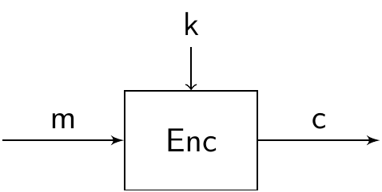
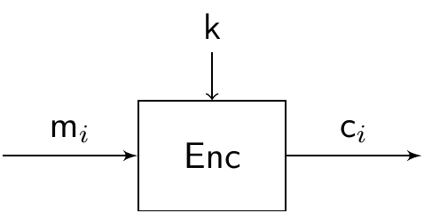
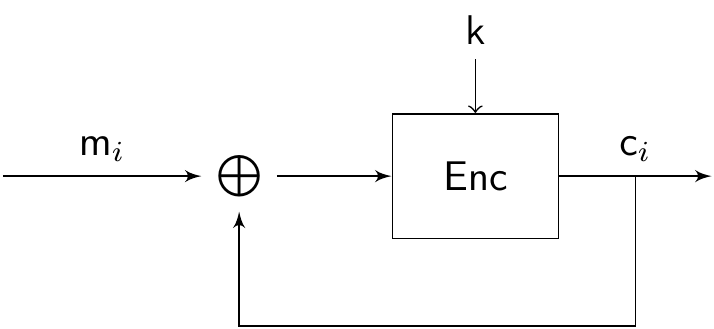
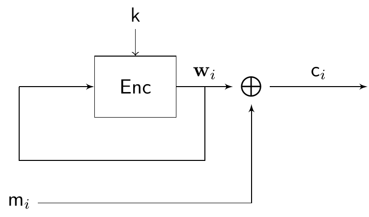
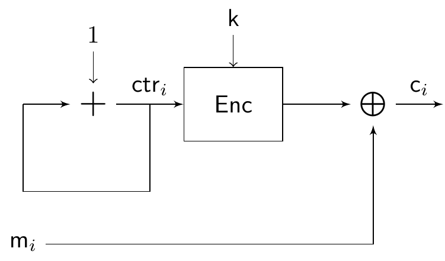

3 Block ciphers
In this section, we focus on block ciphers, which are a more popular alternative to stream ciphers. Block ciphers are interesting not only for encryption, but they also have some interesting theoretical implications, since many other cryptographic primitives (like pseudorandom generators) can be built from block ciphers. In this section, we will learn:
What is a block cipher, and what are the properties of a good block cipher;
The different modes of operation of a block cipher;
Two prime examples of block ciphers: DES and AES.
3.1 Overview of block ciphers
Recall that the one-time pad, and stream ciphers in general, encrypt bits one by one. In contrast, block ciphers will split our plaintext in blocks of fixed length, and encrypt each of this as a single unit.
Definition 3.1 A block cipher of length \(\ell\) is an encryption scheme that encrypts a message of fixed length \(\ell\).
When encrypting an arbitrarily large message, we will split it into blocks of length \(\ell\) and encrypt each block, using the same key, unlike in the previous section where we tried to stretch the key. Because of this, we will require a good block cipher to satisfy two new properties, that we informally describe below:
Confusion: each bit of the ciphertext depends on several parts of the key. In other words, the relation between key and ciphertext must not be clear to any attacker.
Diffusion: small changes in the plaintext result in significant changes in the ciphertext. More precisely, in any modern block cipher, it is expected that a single bit change in the plaintext should result in at least half of the bits of the ciphertext changing.
Later in this section, we will see some concrete examples of block ciphers used in practice. For now, let us assume that we already have some block cipher \[(\mathsf{KeyGen},\mathsf{Enc},\mathsf{Dec}),\] that we will use as a black box. That is, for now we do not know what happens inside each of the algorithms, only that they work and they are secure. For example, we assume that \(\mathsf{Enc}\) takes as input a plaintext \(\mathsf{m}\) of length \(\ell\) and produces a ciphertext \(\mathsf{c}\) corresponding to \(\mathsf{m}\). We represent this by the diagram

This will allow us to discuss block ciphers in a more general way.
3.2 Modes of operation
Assume that we want to encrypt a message \(\mathsf{m}\) of length \(\ell n\) with a block cipher. When the message length is not a multiple of the block length, some extra bytes are added to complete the last block. This is called padding.11 We start by splitting the message in blocks \[\mathsf{m}_1,\dots,\mathsf{m}_n,\] each of them of length \(\ell\), so that they can be fed into our block cipher. The question is: do we encrypt each block in parallel? Is that secure? Or should we somehow make the blocks influence each other? The way we proceed here is determined by the mode of operation that we choose.
3.2.1 Electronic codebook (ECB) mode
In ECB mode, we take the most straightforward approach, and encrypt each block on its own: \[\mathsf{c}_i=\mathsf{Enc}_k(\mathsf{m}_i).\] The ECB mode is represented in the following diagram: 
The main advantage of this approach is that, since each block is independent, we can make the operations in parallel, potentially saving computation time.
However, this mode presents several weaknesses. For example, since each block is encrypted in exactly the same way, two identical messages result in two identical ciphertexts. So an eavesdropper can see when the same message was sent twice. Even if he does not know the content, this provides the attacker with some partial information, which is something that we would like to avoid.
Furthermore, the ECB mode is particularly bad when encrypting “meaningful” information. A very visual example comes from encrypting an image. Assume that we split the image into small squares of pixels, so that the bit length of each of these matches the length of our block cipher, and then use ECB-mode encryption on each square. Below you can see the result on an example image.12


Because the blocks are encrypted independently, a human eye can still easily distinguish the underlying information. This illustrates ECB mode’s lack of diffusion.
3.2.2 Cipher block chaining (CBC) mode
So we have seen that we want our blocks to interact in some way. To achieve this, the CBC mode takes the following approach: the idea is to create a feedback loop, in which each ciphertext produced by the block cipher is fed back into the input of the next iteration, by computing the \(\mathsf{XOR}\) with the new input. More precisely: \[\mathsf{c}_i=\mathsf{Enc}_k(\mathsf{m}_i\oplus \mathsf{c}_{i-1}).\] The CBC mode is represented in the following diagram: 
Note that this does not work for the first block, since there is no previous ciphertext, and so we introduce something to replace it, which we call the initialization vector (often denoted by IV). By choosing the IV at random, we also introduce randomness in our scheme, making the procedure non-deterministic. Observe also that, due to the recursive nature of the definition, the encryption of a block is not only influenced by the previous block, but by every block that came before, and also the IV. There is no need for the IV to be secret, although it should not be reused, so if a new encryption sessions starts, a new IV should be chosen.
With this approach, we achieve a much higher diffusion. Looking again at the same picture, the result is now very different:

This is due to the fact that the encryption of each block influences the next. Thus, two identical blocks (for example, two squares of white in the corner of the picture) do not produce the same output anymore. The downside of this approach is that, since we need a ciphertext before we can compute the next, we cannot parallelize the computations.
3.2.3 Output feedback (OFB) mode
The next mode of operation actually turns a block cipher into a stream cipher, by recomputing a key each time through the \(\mathsf{Enc}\) algorithm. That is, it is a stream cipher in which the key stream is produced in blocks of length \(\ell\): \[\begin{aligned} & \mathbf w_i = \mathsf{Enc}_k(\mathbf w_{i-1}), \\ & \mathsf{c}_i=\mathsf{m}_i\oplus \mathbf w_i. \\ \end{aligned}\] The OFB mode is represented in the following diagram: 
Again, we need an IV to feed into \(\mathsf{Enc}\) in the first iteration. Observe that the block cipher and the feedback loop do not involve the message at all, which is simply \(\mathsf{XOR}\)’ed with the result of each iteration of the loop to produce the ciphertext, as in any stream cipher.
While, as the CBC mode, the computation cannot be performed in parallel, the fact that the loop does not depend on the message at all allows us to precompute a bunch of key blocks in advance, for later use with a message.
3.2.4 Counter (CTR) mode
Similarly to the OFB mode, the CTR mode produces a stream cipher from a block cipher. It works by keeping a public counter \(\mathsf{ctr}\) that is chosen randomly, and is increased by \(1\) after each iteration. The counter works as an IV that updates after encrypting each block. \[\begin{aligned} & \mathsf{ctr}_i = \mathsf{ctr}_{i-1}+1, \\ & \mathsf{c}_i=\mathsf{m}_i\oplus \mathsf{Enc}_k(\mathsf{ctr}_i). \\ \end{aligned}\] After the last iteration, the current value of the counter is also sent, together with the ciphertext. The CTR mode is represented in the following diagram: 
Exercise 3.1 We have not discussed the decryption procedure of any of the modes of operation. Given a \(\mathsf{Dec}\) algorithm that recovers plaintexts encrypted with \(\mathsf{Enc}\), describe how decryption works for each mode of operation. Recall that the values of the IV and counter are public.
3.3 DES and AES
Now that we know how to use block ciphers, let us look a bit into some of the most famous ones: the Data Encryption Standard (DES), and its successor the Advanced Encryption Standard (AES). DES was designed by a team at IBM in 1974, and became the first official encryption standard in the US in 1977. It remained as the recommended encryption scheme until 1999, when it was replaced by AES.13
3.3.1 Data Encryption Standard (DES)
DES is a block cipher of length \(64\), which uses a key of \(56\) bits. Essentially, it is composed of \(16\) identical rounds, each of them consisting of the following. During each round, a round key \(\mathsf{k}_i\) of 48 bits is derived from the master key. In round \(i\), the algorithm receives \(\mathsf{m}_{i-1}\), the output of the previous round (or the original message, for \(i=1\)), and computes \(\mathsf{m}_i\), the output of the current round. In between, the following step happen:
Split \(\mathsf{m}_{i-1}\) in two halves \(\mathbf L_{i-1}, \mathbf R_{i-1}\) of 32 bits each.
Derive the round key \(\mathsf{k}_i\) from \(\mathsf{k}\).
Set \(\mathbf L_{i}=R_{i-1}\) and \(\mathbf R_{i}=L_{i-1}\oplus f(\mathbf R_{i-1},\mathsf{k}_i)\).
Return \(\mathbf m_i=(\mathbf L_i, \mathbf R_i)\)
After round \(16\), the end result \(\mathsf{m}_{16}\) is the ciphertext.
Decryption of DES is almost the same as encryption, starting from the last round key. Observe that one half of the input of each round is not encrypted, just moved around, and so in total each half of the plaintext is encrypted \(8\) times by \(\mathsf{XOR}\)’ing it with a function of the round key. There are a couple of details that we have not specified yet:
How to derive round keys from the master key \(\mathsf{k}\). Without getting into much detail, the \(\mathsf{k}_i\) is obtained from \(\mathsf{k}\) by performing some rotations and permutations on the positions of the bits, and then some bits are ignored.
How the function \(f\) works. First, the function expands the 32-bit input \(\mathbf R_{i-1}\) to a 48-bit string, by repeating some of the bits in specified positions. The result is then \(\mathsf{XOR}\)’ed with the round key \(\mathsf{k}_i\). The result from this operation is then split into \(8\) blocks of \(6\) bits each, and fed into what is known as substitution boxes (S-boxes), which are functions specified by a lookup table. Each box outputs a string of 4 bits, so in total we have a string of \(32\) bits. Finally, the positions of the bits in this string are permuted, and the result is the output of the function \(f\).
The design of the cipher, specially the function \(f\), might look arcane. Indeed, since the design and standardization of DES was not a public process, the reason behind some design choices is still not completely clear. What is known, however, is that the \(f\) function and the \(S\)-boxes were designed to thwart any attack known at the time (and even some that were not known to the public). The takeaway message here is that the \(S\)-boxes and the final permutation play a big role in achieving a good level of diffusion, propagating change through the whole ciphertext in the following rounds. Indeed, we have the following result.
Proposition 3.1 By the end of the fifth round of DES, every single bit of the current ciphertext depends on all the bits of the plaintext and all the bits of the key.
No sophisticated efficient attacks are known against DES to date. However, the key size is simply too small for today’s standards (look again at the table at the end of section 1), and so it was eventually replaced by AES. Some variants of DES, like 3DES, which essentially means applying DES three times in a row, are still in use, and have withstood any attacks so far.
3.3.2 Advanced Encryption Standard (AES)
AES is a block cipher with block length \(128\) bits. Unlike DES, which used \(56\)-bit keys, AES supports keys of bit length \(128\), \(192\) and \(256\), and has between \(10\) and \(14\) rounds, depending on the key length. Moreover, while in DES only half of the block was encrypted in each round, the full block is encrypted in every round now. On a very high level, each round consists of the following steps, called layers:
Key addition layer: a round key of length \(128\) is derived from the master key, in a process called key schedule.
Byte substitution layer: similarly to DES, AES uses \(16\) S-boxes defined by lookup tables, replacing each byte of the message by a new byte specified by the corresponding \(S\)-box. This layer introduces confusion.
Diffusion layer: the position of the bytes are permuted. Then, blocks of four bytes are combined using some matrix operations.
Regarding security, no attack more efficient than brute force is known to date. Thus, the security level provided by AES is \(\lambda\), where \(\lambda\in\{128,192,256\}\) is the bit size of the key.
The following video has a very clear and concise overview of the inner workings of AES.
One must be careful when choosing padding, as some choices are vulnerable to certain attacks in some modes of operation. An example of this is the padding oracle attack: https://en.wikipedia.org/wiki/Padding_oracle_attack.↩︎
Source: https://en.wikipedia.org/wiki/Block_cipher_mode_of_operation. Images by Larry Ewing (lewing@isc.tamu.edu) and GIMP (https://www.gimp.org/).↩︎
Some interesting bits of history around DES and NSA involvement can be found in Chapter 3 of Christof Paar and Jan Pelzl. Understanding cryptography: a textbook for students and practitioners. Springer Science & Business Media, 2009..↩︎